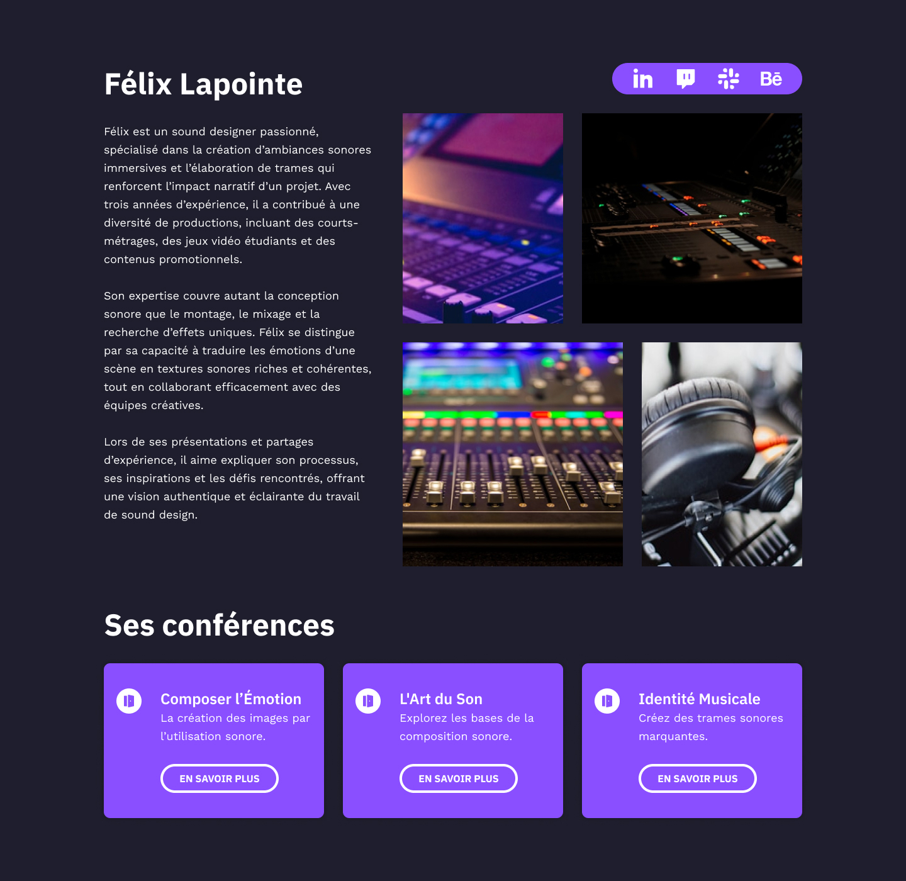

Pour ce projet scolaire, il fallait choisir une thématique de média à mettre en image pour des conférences. Moi, j’ai choisi l’audio . Donc, mon site de conférences et conférenciers se composent de sons et de trames sonore .
Je n’ai pas utilisé l’IA pour ce projet.

La description sur le conférencier